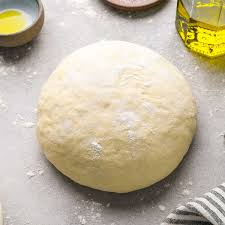

Easy Pizza Dough

Description
Make this easy pizza dough recipe when you have a need for tasty homemade pizza. A pie made with this dough will take you to your favorite NY pizzaria.
Ingredients
- 1200 grams flour
- 850 grams water
- 20 grams salt
- 5 grams dried yeast
- 5 grams honey
Steps
- The evening before you plan to make pizza mix 200 grams of water, 200 grams flour, the yeast and honey. Mix well and place in fridge. This is called a poolish.
- Place 650 grams of water in your mixing bowl along with the poolish. Mix well.
- Add the salt and add in the rest of the flour.
- If using a mixer like a Kitchen Aid, knead the dough for 6-8 minutes. If mixing by hand knead for about 10 minutes.
- After kneading the dough, form into a large ball, cover and let double in size.
- Once the dough has doubled, form into seperate dough balls. Each dough ball should weigh a minimum of 250 grams.
- Let the dough balls rest for at least an hour before using, or place in the fridge for up to 48 hours.